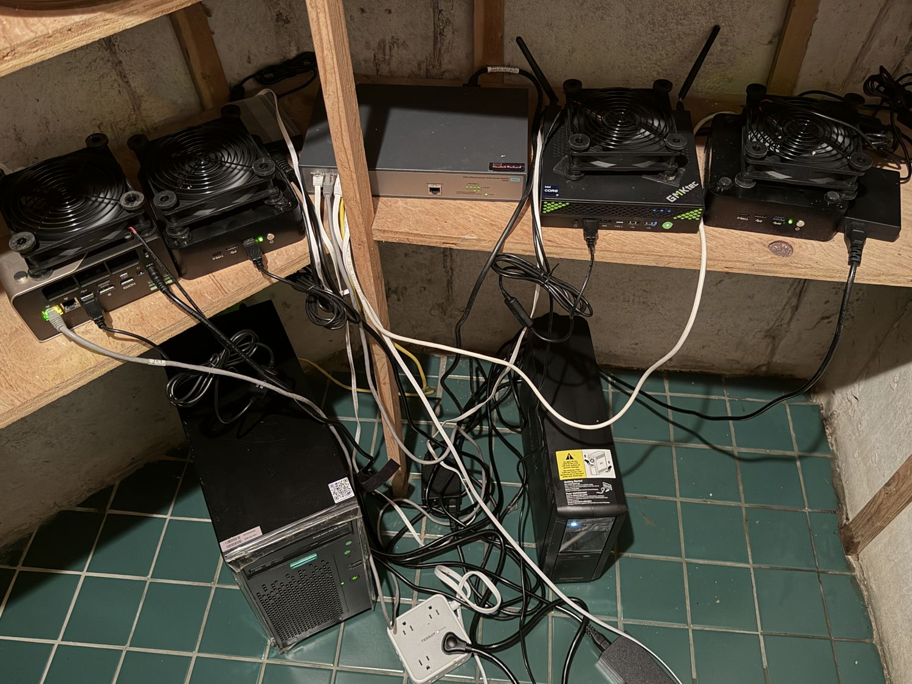

IL-42: AI Wrote an HTTPS Server Despite Available Packages
On one RHEL 9.8 VM, an agent wrote a Python HTTPS service. Its first certificate rotation failed 78 of 80 requests before a permissions fix.
Read the field note ↗Exploring how to make the best of AI in infrastructure, from greenfield to brownfield, datacenter to edge, security to scale.
↘SCROLL TO01 / Articles
44 articles
Browse 27 Linux administration field notes →
On one RHEL 9.8 VM, an agent wrote a Python HTTPS service. Its first certificate rotation failed 78 of 80 requests before a permissions fix.
Read the field note ↗
A temporary HTTPS server delivered a keytab without authenticating the downloader.
Read the field note ↗
The test listener and the lab’s command service both used socat. Killing processes by name stopped both.
Read the article ↗
Three RHEL 10 repository deployments succeeded. Two broke package tools and needed repairs; the third added only two metadata packages.
Read the article ↗
Deleting two temporary files did not remove the passwords already copied into the command log.
Read the article ↗
A Galera deployment used temporary SELinux permissive mode before restoring enforcement and adding a targeted policy.
Read the article ↗
A version-lock plugin installed after a signature-parser failure when the agent retried with --nogpgcheck.
Read the article ↗
A DHCP investigation deleted archived journals before correcting the router interface assignment.
Read the article ↗
Temporary repositories installed packages without signature checks; removing their definitions did not verify those packages.
Read the article ↗
PostgreSQL replication worked after setup, but the primary still held the SSH key used for root access to both standbys.
Read the article ↗
An HTTP service explicitly used root, while a UDP collector inherited root from its systemd unit.
Read the article ↗
The confined worker ran, but its systemd unit discarded standard output and standard error.
Read the article ↗
A Maildir filename changed during normal use could make an imported message look missing on the next Ansible run.
Read the article ↗
The agent bypassed an OpenWrt startup guard after it detected another DHCP responder.
Read the article ↗
A MinIO node needed local shard healing; a separate RabbitMQ member never had a confirmed healthy rejoin.
Read the article ↗
A PostgreSQL failover deployment stopped short of replication, while a routing test bypassed the unfinished LAN path.
Read the article ↗
CentOS’s normal repositories stayed disabled. In a separate Ubuntu run, APT kept a source whose local server was gone.
Read the article ↗
A shell testing a worker’s filesystem restrictions wrote to /dev/shm. A separate AIDE baseline missed a changed file.
Read the article ↗
An Apache repair prepended text to every configuration line, restored the file, then repeated the damaging edit.
Read the article ↗
Ansible skipped AIDE initialization because a database already existed; the first-installation branch remained untested.
Read the article ↗
A failover report claimed no packet loss despite a sequence gap of 245 replies and a manual route correction.
Read the article ↗
Password-scoring tools rejected weak values that the tested administrative setters still accepted.
Read the article ↗
One script trusted a saved PID; another selected a swap device dynamically but hardcoded its shutdown target.
Read the article ↗
An HTTPS deployment retained ordinary HTTP, and a separate integrity-tool installation introduced an SMTP listener.
Read the article ↗
The agent disabled swap and started a memory hog. Bash then failed to fork, and SSH connections failed for the rest of the run.
Read the article ↗
The proxy retries POST requests after an error. If the first backend has already saved the change, the second attempt could repeat it.
Read the article ↗
The agent tested replication with one table, but gave a test login privileges over every database and left the account in place.
Read the article ↗
A backup test left six synthetic dated archives beside a genuine backup after pruning and restart checks.
Read the article ↗
A SONiC bridge joined two Ubuntu clients, disappeared on reboot and needed manual reconstruction.
Read the article ↗
OpenSSL was missing, but the shell continued into PostgreSQL account updates with empty passwords. The agent repaired them afterward.
Read the article ↗
A Galera cluster recovered its committed data while SELinux remained persistently permissive on all three hosts.
Read the article ↗
A version-lock installation skipped package signatures; a separate runtime download skipped TLS certificate verification.
Read the article ↗
Snapshot rollback worked before the restart request. Later remote commands timed out, and access did not recover before the run ended.
Read the article ↗
The service answered eight requests with the same certificate. The run ended before an automatic replacement was observed.
Read the article ↗
Ansible opened the upload service port across a firewall zone despite identifying node2 as the remote client.
Read the article ↗
PostgreSQL replication worked, but the certificate authority’s private key remained in /tmp/pgca on the primary server.
Read the article ↗
The agent copied a reporting credential over SSH and deleted the temporary files, but left the SSH setup without a cleanup step.
Read the article ↗
Galera passwords entered saved command output; later staging-file deletion did not erase those copies.
Read the article ↗
The retention test worked, but six backdated copies stayed beside the only genuine backup.
Read the article ↗
The new permission rule worked. Its verification replaced an existing schedule, and cleanup deleted the replacement without restoring the original.
Read the field note ↗
A missing zram module led the agent to boot an older kernel. Another run found matching modules and kept the current kernel.
Read the field note ↗
Four deployments used custom Python servers. None tried installing Apache or nginx.
Read the article ↗
Recorded cases show how successful tasks can leave changed systems, extra access, missing configuration, and misleading reports.
Read the essay ↗
03⌁THEMost tasks passed. The command logs and final machine checks showed what the success rate left out.
Read the field note ↗No articles cover this operating system yet.
03 / The newsletter
New findings, infrastructure experiments, and notes on what happens when language models touch real systems.
02 / About
Reconciling the determinism of infrastructure-as-code with the probabilism of agentic AI. This site explores the practical boundary between language models and the systems they operate.
Get in touch →